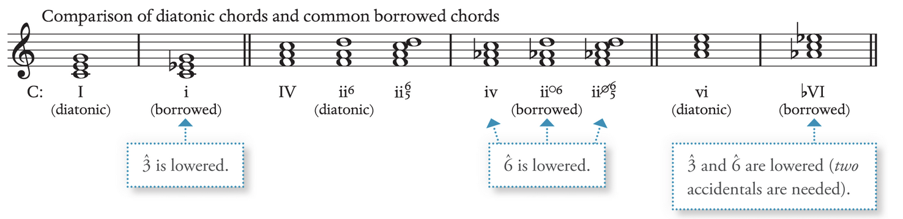

Modal Mixture Chrom
Modal Mixture Link to heading
Modal mixture arises when notes, chords, or passages from the parallel minor are used within a major key, or vice versa: e.g. Passage of A minor appears in A major. A remains the tonic. Hence no modulation occurs
Parallel Minor in a Major key Link to heading
Borrowed chords (change of quality from the equal parallel key): may involve one to a few harmonies to entire section from the parallel minor. The function of the borrowed chord is similar to the diatonic version of the harmony. E.g. iv == IV and ii○6 == ii6.
Lower the 3̂ and 6̂ when Major to minor Raise by half when minor to major.
Minor 6̂ goes down by step when using it in major key: no A2 allowed between intervals.
If the 7̂ appears as borrow tone (which are relatively rare), they often function as passing chord.
Common borrowed chords: Link to heading
- 3̂ e.g. i triad
- 6̂ e.g. ii^○6^ or ii^○7^
- 3̂ and 6̂ e.g. ♭VI

Embellishing tone with vii^○7^: the 6̂ may serve as a neighbour tone within major key
Parallel Major in a Minor key Link to heading
6̂: Rarely uses borrowed chords with isolation. Borrowed chords are rare as the minor key often raises 6̂ and 7̂ as is minor melodic scale: IV and V are not considered as borrowed chords
3̂: usually forms part of applied chord V6/iv rather than borrowed chord. The only common instance of the borrowed chord in a minor key is at the end of the phrase where i -> I: known as Picardy third.